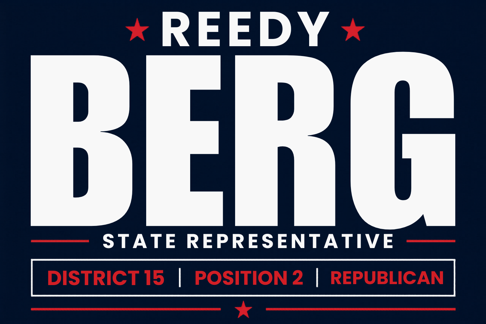

Help Reedy reach voters across Central Washington and win LD-15 Position 2. Every contribution goes directly toward reaching our neighbors.
Funds door-to-door outreach and voter contact
Supports mailers and yard signs across LD-15
Amplifies Reedy's voice on education, water, and economic freedom
Contributions are processed securely through Anedot

Paid for by Reedy Berg for Washington ·
4001 Summitview Ave Ste 5 Mailbox 207, Yakima WA 98908
Contributions are not tax deductible. ·
WA PDC Disclosure